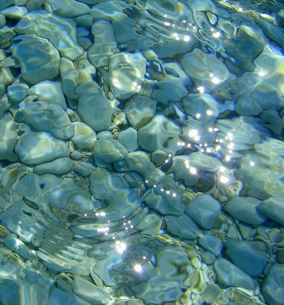

Galeri


- Bentuk Kerjasama Indonesia
- Kerjasama Bilateral → hubungan antara dua negara dengan tujuan saling
menguntungkan kedua belah pihak.
- Pertukaran Pelajar :
Salah satu bentuk kerjasama dalam bidang pendidikan yang dilakukan
adalah pertukaran mahasiswa antar kedua negara. Program pertukaran
mahasiswa ini dapat memungkinkan mahasiswa dari Indonesia dan
Thailand untuk belajar di institusi pendidikan di negara mitra.
Dengan ini, para mahasiswa dapat memperluas wawasan, memperdalam
pemahaman budaya, dan memperkaya pengalaman belajar. Selain itu,
kerjasama antar institusi pendidikan juga menjadi sarana untuk
meningkatkan kualitas pendidikan, pertukaran penelitian, dan
pengembangan kurikulum yang relevan dengan kebutuhan global.
Dengan program pertukaran pelajar ini, Indonesia dan Thailand
mempererat hubungan kerja sama. Program pertukaran pelajar
dalam bidang kebudayaan atau Indonesia-Thailand friendship
& Cultural Exchange Program (IT-FCP) 2014 pada tanggal 13-19
Mei 2014. Diharapkan dengan program ini mampu mempererat
hubungan antara kedua negara terutama dalam bidang kebudayaan"
dikutip dari situs resmi IT-FCP, Jogjakarta, Kamis. Kerja sama
ini berada di bawah naungan Universitas Gadjah Mada (UGM) dari
pihak Indonesia dan Chulalongkorn University dari pihak Thailand.
- Kerjasama Regional → kerjasama antara negara-negara di kawasan yang melibatkan lebih dari 2 (dua) Negara.
- Advokasi bagi anak-anak putus sekolah :
ASEAN memberikan advokasi untuk mencapai anak-anak dan remaja yang putus sekolah dan mendorong pemerintah di masing-masing negara untuk menyediakan sekolah yang aman dan tangguh bagi para pelajar.
- Kerjasama Multilateral → kerja sama yang diselenggarakan oleh bangsa-bangsa di dunia tanpa memandang wilayah untuk kepentingan tertentu.
- International Labour Organization (ILO)
Food and Agricultural Organization (FAO)